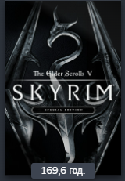
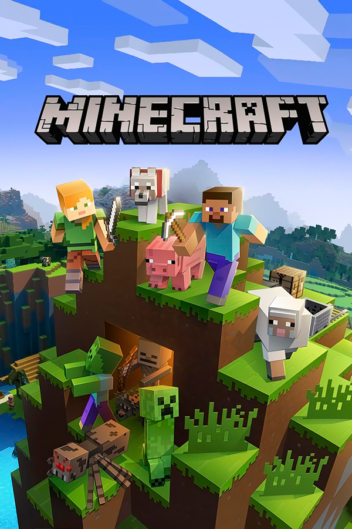

Мої улюблені ігри
| Гра |
Жанр |
Дата виходу |
Розробник |
| The Elder Scrolls V: Skyrim |
Рольова гра |
11 листопада 2011 |
Bethesda Game Studios |
| The Witcher 3: Wild Hunt |
Action/RPG |
19 травня 2015 |
CD Projekt RED |
| Overwatch 2 |
Багатокористувацький шутер |
4 жовтня 2022 |
Blizzard Entertainment |
| Minecraft |
Пісочниця |
18 листопада 2011 |
Mojang Studios |

The Elder Scrolls V: Skyrim (з англ. Стародавні Сувої V: Скайрим; також The Elder Scrolls V або Skyrim; скорочено TESV: Skyrim або TESV) —
рольова відеогра, розроблена Bethesda Game Studios і опублікована Bethesda Softworks. Це п'ята гра в серії The Elder Scrolls, попередньою була The Elder Scrolls IV: Oblivion. Гра вийшла 11 листопада 2011 року для Windows, PlayStation 3 й Xbox 360. Влітку 2016 було анонсоване перевидання The Elder Scrolls V: Skyrim – Special Edition зі всіма DLC та покращеною графікою. Реліз перевидання відбувся 28 жовтня 2016 для платформ ПК, PlayStation 4 та Xbox One. Власники повної ліцензійної гри на ПК отримали перевидання безкоштовно.

The Witcher 3: Wild Hunt (пол. Wiedźmin 3: Dziki Gon; укр. «Відьмак 3: Дикий гін») — комп'ютерна гра у стилі action/RPG, розроблена польською компанією CD Projekt RED за мотивами серії романів «Відьмак» письменника Анджея Сапковського. Гра продовжує «Відьмак» і «Відьмак 2: Вбивці королів» та завершує трилогію відеоігор про відьмака. Вихід гри був запланований на 2014 рік, але потім було ухвалене рішення про перенесення випуску на лютий 2015 року. Зрештою, остаточною датою було обрано 19 травня, коли гра вийшла на Windows, PlayStation 4 і Xbox One.

Overwatch 2 — відеогра в жанрі багатокористувацького шутера від першої особи, розроблена Blizzard Entertainment та видана нею ж 4 жовтня 2022 року. Продовження Overwatch, що поширюється за моделлю free-to-play на Windows, PlayStation 4, PlayStation 5, Xbox One, Xbox Series X/S і Nintendo Switch. В Overwatch 2 гравці поділяються на дві команди по 5 учасників у кожній. Кожен персонаж у команді має унікальний набір навичок, що складається з активних, пасивних і ультимативних здібностей. Overwatch 2, як і попередня гра, головним чином зосереджена на боротьбі гравців проти гравців (PvP) у кількох різних режимах і на картах, а також включає в себе як звичайні, так і рейтингові змагання.

Minecraft (від англ. mine craft — досл. «шахтарське ремесло») — відеогра в жанрі пісочниці у відкритому світі з поглядом від першої/третьої особи, розроблена та видана Mojang Studios у 2011 році. Гра започаткувала однойменну серію, для всіх творів якої характерний мінімалістичний кубічний дизайн. Гра розроблена у 2009 році шведським програмістом Маркусом Перссоном, відомим також як «Notch», і надалі розробляється заснованою Маркусом Перссоном компанією Mojang, котра належить Microsoft Studios. Minecraft належить до ігор з найширшою аудиторією і визнана найпродаванішою відеогрою в історії.